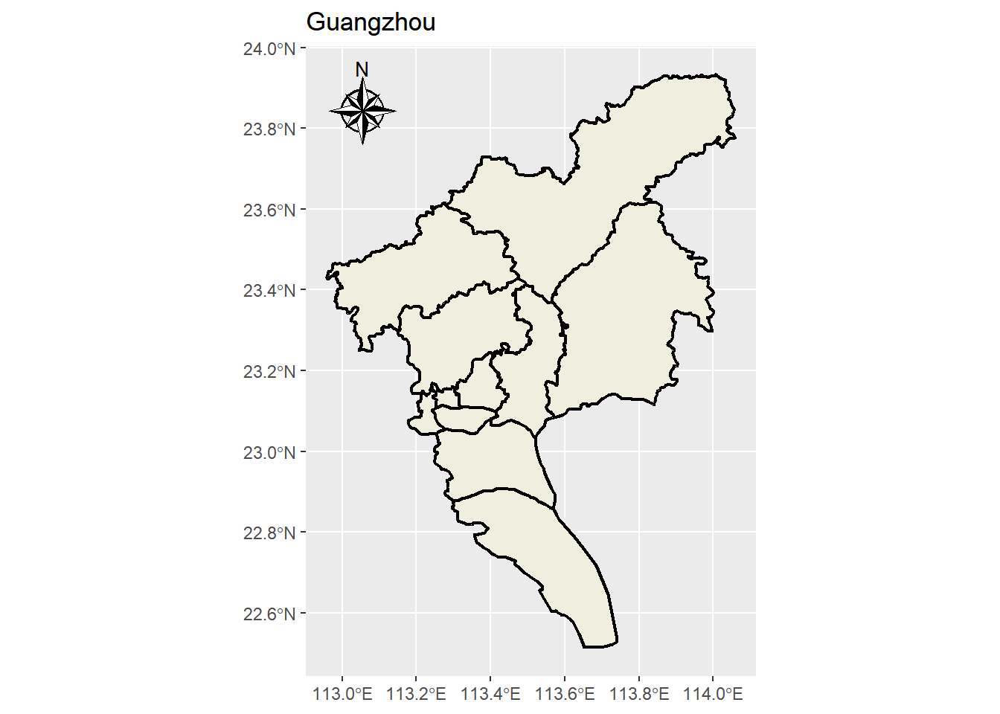
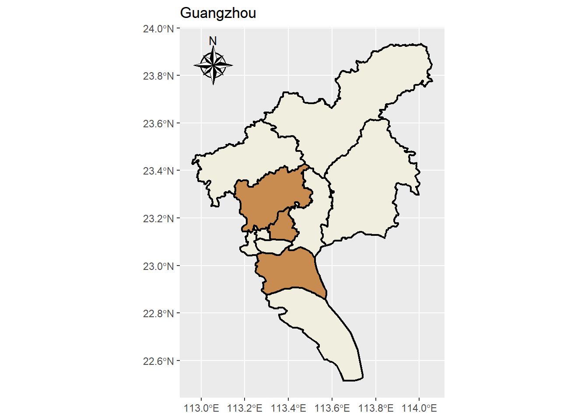
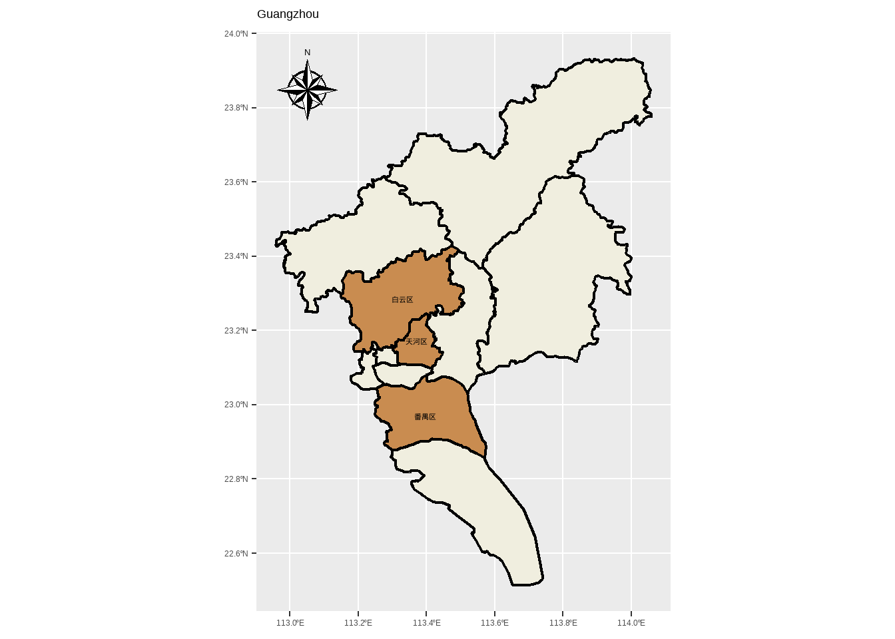
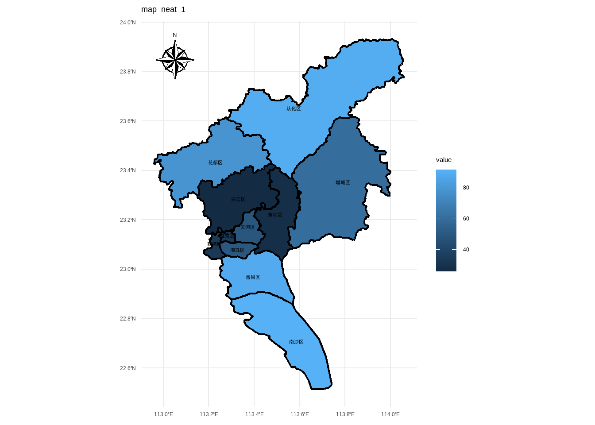
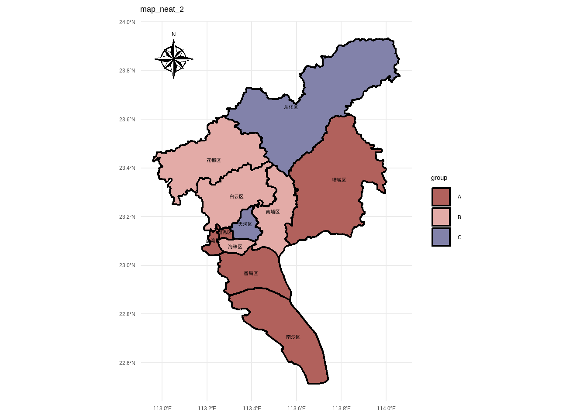
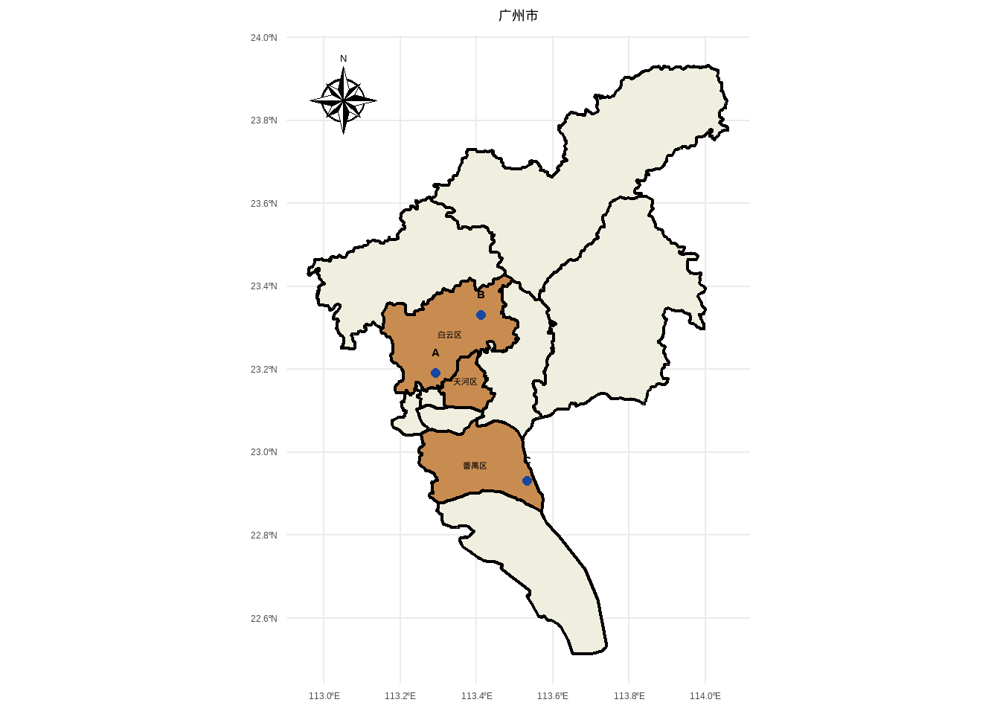

install.packages("ggspatial")
install.packages("sf")R语言采样地图绘制详细教程
可视化
地图
本期主要介绍如何绘制采样地图和国内区域地图，并自定义相关内容
R包介绍
R包安装
基础绘图代码
导入地图json数据
进入从阿里云DataV可视化网站（可选择其他平台）下载格式为.json的地图数据：

数据导入
library(ggspatial)
library(sf)Linking to GEOS 3.13.1, GDAL 3.11.4, PROJ 9.7.0; sf_use_s2() is TRUElibrary(ggplot2)
# 导入地图json数据
map <- st_read("01-attch\\10\\广州市.json")Reading layer `广州市' from data source
`E:\99 其它\05 R语言\doc\01-attch\10\广州市.json' using driver `GeoJSON'
Simple feature collection with 11 features and 9 fields
Geometry type: MULTIPOLYGON
Dimension: XY
Bounding box: xmin: 112.9585 ymin: 22.51436 xmax: 114.06 ymax: 23.93292
Geodetic CRS: WGS 84开始绘制
添加省份区边框
ggplot() +
labs(title = "Guangzhou", x = NULL, y = NULL) +
geom_sf(data = map, fill = c("#f0eedf"), size = 0.8, color = "black")
添加指南针annotation
p <- ggplot() +
labs(title = "Guangzhou", x = NULL, y = NULL) +
geom_sf(data = map, fill = c("#f0eedf"), size = 0.8, color = "black") + # 设置比例尺
annotation_north_arrow(
location = "tl",
style = north_arrow_nautical(
fill = c("black", "white"),
line_col = "black"
)
)
p
我们来自定义绘图内容
设置白云区天河区突出显示
我们新加一个图层就可以，然后fill填充亮色
p + geom_sf(
data = map |> dplyr::filter(name %in% c("天河区", "白云区", "番禺区")),
fill = c("#c98c50"),
size = 0.8,
color = "black"
)
设置text
接下来我们要在图里标注部分区名
library(showtext)
showtext::showtext_auto()p + geom_sf(
data = map |> dplyr::filter(name %in% c("天河区", "白云区", "番禺区")),
fill = c("#c98c50"),
size = 0.8,
color = "black"
) +
geom_sf_text(
data = map |> dplyr::filter(name %in% c("天河区", "白云区", "番禺区")),
aes(label = name),
size = 3,
color = "black",
fontface = "bold"
)
设置一个合适的主题
p2 <-
p + geom_sf(
data = map |> dplyr::filter(name %in% c("天河区", "白云区", "番禺区")),
fill = c("#c98c50"),
size = 0.8,
color = "black"
) +
geom_sf_text(
data = map |> dplyr::filter(name %in% c("天河区", "白云区", "番禺区")),
aes(label = name),
size = 3,
color = "black",
fontface = "bold"
) +
theme_minimal()
p2
设置根据数值变量对各区的fill进行映射
# 先生成一个随机变量
map_neat_1 <-
map |>
dplyr::mutate(
value = sample(1:100, nrow(map), replace = TRUE)
)
ggplot() +
labs(title = "map_neat_1", x = NULL, y = NULL) +
geom_sf(data = map_neat_1, aes(fill = value), size = 0.8, color = "black") + # 设置比例尺
annotation_north_arrow(
location = "tl",
style = north_arrow_nautical(
fill = c("black", "white"),
line_col = "black"
)
) +
geom_sf_text(
data = map,
aes(label = name),
size = 3,
color = "black",
fontface = "bold"
) +
theme_minimal()
根据分类变量对区进行fill映射
library(MetBrewer)
map_neat_2 <-
map |>
dplyr::mutate(
group = sample(c("A", "B", "C"), nrow(map), replace = TRUE)
)
ggplot() +
labs(title = "map_neat_2", x = NULL, y = NULL) +
geom_sf(data = map_neat_2, aes(fill = group), size = 0.8, color = "black") + # 设置比例尺
annotation_north_arrow(
location = "tl",
style = north_arrow_nautical(
fill = c("black", "white"),
line_col = "black"
)
) +
geom_sf_text(
data = map,
aes(label = name),
size = 3,
color = "black",
fontface = "bold"
) +
theme_minimal() +
scale_fill_met_d("Cassatt1")
添加采样点
data_sample <-
tibble::tibble(
lon = c(113.292333, 113.412333, 113.532333),
lat = c(23.191944, 23.331944, 22.931944),
point = c("A", "B", "C"),
)
p2 +
geom_point(
data = data_sample,
aes(x = lon, y = lat),
size = 2,
color = "#1647a3"
) +
geom_text(
data = data_sample,
aes(x = lon, y = lat, label = point),
size = 4,
color = "#000000",
fontface = "bold",
nudge_y = 0.05
)+
labs(title = "广州市")+
theme(plot.title = element_text(hjust = 0.5))